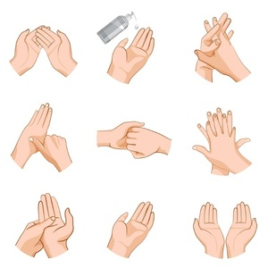

| O que é uma Página Web?
| O que é o Coronavírus
| Como o Brasil está reagindo ao vírus?
| Como se previnir do Coronavírus |
Como se previnir do Coronavírus (Sars-Cov-2)
O Ministério da Saúde orienta cuidados básicos para reduzir o risco geral de contrair ou transmitir infecções respiratórias agudas, incluindo o coronavírus. Entre as medidas estão:
- Lavar as mãos frequentemente com água e sabonete por pelo menos 20 segundos,
respeitando os 5 momentos de higienização. Se não houver água e sabonete, usar um desinfetante para as mãos à base de álcool.
- Evitar tocar nos olhos, nariz e boca com as mãos não lavadas.
- Evitar contato próximo com pessoas doentes.
- Ficar em casa quando estiver doente.
- Cobrir boca e nariz ao tossir ou espirrar com um lenço de papel e jogar no lixo.
- Limpar e desinfetar objetos e superfícies tocados com frequência.
Profissionais de saúde devem utilizar medidas de precaução padrão, de contato e de gotículas (mascára cirúrgica, luvas, avental não estéril e óculos de proteção).
Para a realização de procedimentos que gerem aerossolização de secreções respiratórias como intubação, aspiração de vias aéreas ou indução de escarro, deverá ser utilizado precaução por aerossóis, com uso de máscara N95.
